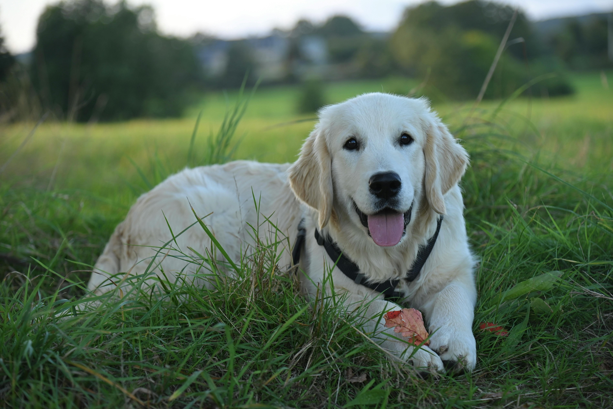
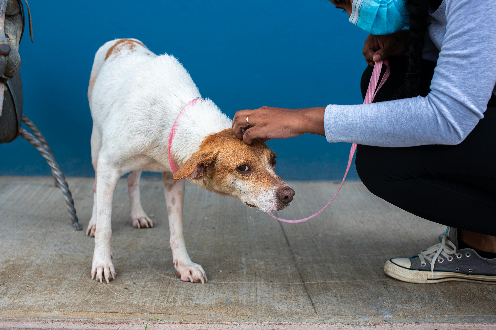

Nuestra Misión
Somos un refugio dedicado al rescate y rehabilitación de animales.

¿Por qué adoptar?
Al adoptar, salvas una vida y liberas espacio para otro animal necesitado.
Nuestros Servicios
Adopción Responsable
Te asesoramos para encontrar la mascota ideal.

Jornadas de Salud
Servicios de vacunación y desparasitación gratuita.

Charlas de Tenencia
Educamos a nuevos dueños sobre cuidados básicos.
Gatos en adopción


Perros en adopción


Amor Incondicional
Agradecimiento eterno.
Salud Mental
Reduce el estrés.
Seguridad
Lealtad absoluta.
Socialización
Conecta con personas.
Propósito
Personas más empáticas.
Felicidad
Recibimiento alegre.
Contacto
Correo: infor_pets23@worldpets.org
Teléfono: +57 300 123 4567